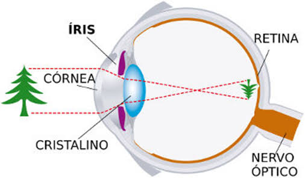

📷
Câmeras
Utilizam lentes para formar imagens reais sobre um sensor fotossensível.
Descubra a ciência por trás das imagens, das cores, dos espelhos, do olho humano, da fibra óptica e das principais aplicações da Física no cotidiano e na tecnologia.
Projeto Integrador IFA • Física e TecnologiaA formação de imagens é o processo pelo qual a luz, ao interagir com objetos e meios ópticos, organiza-se para criar uma representação visual daquilo que nos cerca.
Sempre que você olha para uma fotografia, assiste a um filme, utiliza um projetor ou observa um objeto através de uma lente, está testemunhando princípios da óptica geométrica.

Utilizam lentes para formar imagens reais sobre um sensor fotossensível.
Utilizam sistemas ópticos para ampliar e projetar imagens sobre uma superfície.
Produzem imagens virtuais ampliadas quando o objeto está dentro da distância focal.
Imagens Reais: são formadas pelo cruzamento efetivo dos raios de luz e podem ser projetadas sobre uma tela.
Imagens Virtuais: surgem do prolongamento aparente dos raios luminosos e não podem ser projetadas diretamente sobre uma tela.
A posição das imagens formadas por lentes delgadas e espelhos esféricos pode ser determinada pela relação:
Onde f representa a distância focal, p representa a distância do objeto e p' representa a distância da imagem.
A luz visível é uma pequena parte do espectro eletromagnético. As diferentes frequências percebidas pelo sistema visual humano estão associadas às diferentes cores.
A síntese aditiva é baseada na combinação de fontes luminosas. Seus componentes fundamentais são vermelho, verde e azul, formando o sistema RGB.
Um dos componentes fundamentais do sistema RGB.
Componente luminoso essencial para telas digitais.
Completa o sistema RGB.
A síntese subtrativa ocorre principalmente com pigmentos. O sistema CMYK utiliza ciano, magenta, amarelo e preto.
O caminho que a luz faz para voltar.
A reflexão acontece quando a luz atinge uma superfície e retorna ao meio de origem.
O ângulo de incidência é igual ao ângulo de reflexão, considerando os ângulos medidos em relação à reta normal.
| Tipo | Características | Exemplo |
|---|---|---|
| Plano | Imagem virtual, direita e de mesmo tamanho. | Espelhos domésticos. |
| Côncavo | Pode formar imagens reais ou virtuais. | Espelhos odontológicos. |
| Convexo | Produz imagem virtual, direita e reduzida. | Retrovisores. |
Mantém o tamanho aparente do objeto.
Pode concentrar raios luminosos.
Amplia o campo de visão.
Como a luz consegue viajar dentro de uma fibra sem escapar.
A fibra óptica utiliza princípios da óptica para transmitir informações por meio de pulsos de luz.
No interior da fibra, a luz permanece confinada ao núcleo e pode percorrer grandes distâncias com pouca perda de sinal.
O funcionamento da fibra óptica está relacionado ao fenômeno chamado reflexão interna total.
A luz viaja pelo núcleo da fibra e, ao atingir a interface com a casca sob determinadas condições, é refletida completamente para dentro do núcleo.
Dessa maneira, o feixe luminoso permanece confinado dentro da fibra, realizando sucessivas reflexões até chegar à outra extremidade.
A relação entre os ângulos e os índices de refração é descrita pela Lei de Snell:
Nessa expressão, n₁ e n₂ representam os índices de refração dos meios, enquanto θ₁ e θ₂ são os ângulos medidos em relação à normal.
Quando a luz passa de um meio com maior índice de refração para outro com menor índice, existe um ângulo chamado ângulo crítico.
Se o ângulo de incidência for maior que esse ângulo crítico, ocorre a reflexão interna total.
Uma fibra óptica possui principalmente duas regiões responsáveis pelo confinamento da luz: o núcleo e a casca.
É a região central da fibra por onde a luz se propaga. Possui índice de refração maior que o da casca.
É a camada que envolve o núcleo. Possui índice de refração menor.
Pulsos de luz podem representar informações digitais e viajar através da fibra.
| Elemento | Função | Índice de refração |
|---|---|---|
| Núcleo | Região por onde a luz se propaga. | Maior |
| Casca | Ajuda a manter a luz confinada no núcleo. | Menor |
| Interface | Região onde pode ocorrer a reflexão interna total. | — |
Imagine um feixe de luz entrando no núcleo da fibra.
Como o núcleo possui índice de refração maior que a casca, a luz pode atingir a interface com um ângulo adequado para sofrer reflexão interna total.
A luz então é refletida novamente para dentro do núcleo.
Esse processo se repete várias vezes, permitindo que a informação luminosa viaje pela fibra.
A reflexão interna total permite que a fibra óptica seja utilizada para transmitir grandes quantidades de informação.
Pulsos luminosos podem representar dados digitais e viajar pelo interior da fibra, tornando essa tecnologia fundamental para sistemas modernos de comunicação.
Utilizada em redes de alta velocidade.
Permite transmissão rápida de grandes quantidades de dados.
É utilizada em sistemas modernos de comunicação.
Qual é o principal fenômeno físico responsável por manter a luz confinada dentro do núcleo da fibra óptica?